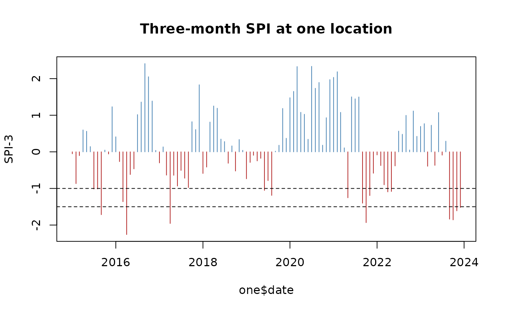

The standardised precipitation index (SPI) says how unusual the precipitation of the last months is, in standard deviations, compared with the same months in other years at the same place. An SPI of -1.5 over three months means a dry spell of a severity seen about once every 15 years. The SPEI does the same with the water balance: precipitation minus potential evapotranspiration.
library(c4e)
survey <- read.csv(system.file("extdata", "survey.csv", package = "c4e"))
survey$interview <- as.Date(survey$interview)
coord <- prepare_coord(survey, lat_var = lat, lon_var = lon,
id = hhid, interview = interview)Monthly data, a long series
The indices need monthly data and many years: the package ships forty
years of monthly precipitation. Daily data are first summed to months
with aggregate_time().
pre <- read_climate(system.file("extdata", "pre_monthly.tif", package = "c4e"))
#> Read pre_monthly: pre [mm/month], monthly, 1984-01-01 to 2023-12-01, 480 layers
#> (synthetic).
raster_meta(pre)[c("variable", "unit", "time_step", "date_range")]
#> $variable
#> [1] "pre"
#>
#> $unit
#> [1] "mm/month"
#>
#> $time_step
#> [1] "month"
#>
#> $date_range
#> [1] "1984-01-01" "2023-12-01"
extracted <- extract_by_coord(pre, georef_coord(coord))
#> Taking the coordinates as longitude and latitude in "EPSG:4326"; give `crs`
#> otherwise.The index
calc_std_index() fits the index at one or more
accumulation scales, in months. Each series is fitted on its own
location’s history.
spi <- calc_std_index(extracted, scale = c(3, 12))
dplyr::filter(spi, ID == ID[1], date >= as.Date("2022-01-01")) |> head(6)
#> # A tibble: 6 × 7
#> # Context: pre [mm/month], month, long; key ID; 2 indicators
#> ID x_cell y_cell date value spi_3 spi_12
#> <chr> <dbl> <dbl> <date> <dbl> <dbl> <dbl>
#> 1 30.27330_-0.11150 30.3 -0.1 2022-01-01 23.3 -0.0834 0.459
#> 2 30.27330_-0.11150 30.3 -0.1 2022-02-01 12.1 -0.374 0.141
#> 3 30.27330_-0.11150 30.3 -0.1 2022-03-01 22.7 -0.899 -0.162
#> 4 30.27330_-0.11150 30.3 -0.1 2022-04-01 57.4 -1.09 0.0606
#> 5 30.27330_-0.11150 30.3 -0.1 2022-05-01 56.3 -1.08 0.203
#> 6 30.27330_-0.11150 30.3 -0.1 2022-06-01 127. -0.384 -1.37
one <- dplyr::filter(spi, ID == ID[1], date >= as.Date("2015-01-01"))
plot(one$date, one$spi_3, type = "h", col = ifelse(one$spi_3 < 0, "firebrick", "steelblue"),
xlab = NULL, ylab = "SPI-3", main = "Three-month SPI at one location")
abline(h = c(-1, -1.5), lty = 2)
Drought months and spells
calc_std_threshold() flags the months beyond index
thresholds. The sign stays in the column name, so
spi3_blw_-1.5 is the months with a three-month SPI below
-1.5. The flags work with spells like any other.
dry <- calc_std_threshold(spi, below = c(-1, -1.5))
dry <- calc_spell(dry, min_spell = 2)
names(dry)
#> [1] "ID" "x_cell" "y_cell"
#> [4] "date" "value" "spi_3"
#> [7] "spi_12" "spi3_blw_-1" "spi3_blw_-1.5"
#> [10] "spi12_blw_-1" "spi12_blw_-1.5" "spell_spi3_blw_-1"
#> [13] "spell_spi3_blw_-1.5" "spell_spi12_blw_-1" "spell_spi12_blw_-1.5"Before each interview
summary <- summarise_by_interview(coord, dry, window = window_lag("1 year"))
print(summary, n = 4)
#> # A tibble: 20 × 24
#> # Context: pre [mm/month], month, summary; key hhid; 22 indicators
#> hhid lag spi_3_mean spi_12_mean `spi3_blw_-1_sum` `spi3_blw_-1.5_sum`
#> <chr> <int> <dbl> <dbl> <dbl> <dbl>
#> 1 HH01 0 0.0497 -0.671 1 0
#> 2 HH02 0 -0.703 0.358 6 4
#> 3 HH03 0 0.234 0.444 0 0
#> 4 HH04 0 0.595 -0.357 0 0
#> # ℹ 16 more rows
#> # ℹ 18 more variables: `spi12_blw_-1_sum` <dbl>, `spi12_blw_-1.5_sum` <dbl>,
#> # `spell_spi3_blw_-1_max` <dbl>, `spell_spi3_blw_-1_mean` <dbl>,
#> # `spell_spi3_blw_-1_sum` <dbl>, `spell_spi3_blw_-1_n` <int>,
#> # `spell_spi3_blw_-1.5_max` <dbl>, `spell_spi3_blw_-1.5_mean` <dbl>,
#> # `spell_spi3_blw_-1.5_sum` <dbl>, `spell_spi3_blw_-1.5_n` <int>,
#> # `spell_spi12_blw_-1_max` <dbl>, `spell_spi12_blw_-1_mean` <dbl>, …
c4e_labels(summary)[c("spi_3_mean", "spi3_blw_-1.5_sum")]
#> spi_3_mean
#> "mean of SPI over 3 months, per 1-year window"
#> spi3_blw_-1.5_sum
#> "months with SPI-3 below -1.5, per 1-year window"The SPEI
With potential evapotranspiration, the same function gives the SPEI. Here a constant 60 mm a month stands in for it; ERA5 records evapotranspiration as a negative number, and either sign is accepted.
pet <- dplyr::mutate(extracted, dplyr::across(dplyr::matches("^\\d{4}-"), \(v) v * 0 + 60))
spei <- calc_std_index(extracted, scale = 3, index = "spei", pet = pet)
#> Water balance: precipitation minus the absolute evapotranspiration.
names(spei)
#> [1] "ID" "x_cell" "y_cell" "date" "value" "spei_3"In one call
climate_indices() runs the chain from the survey and the
raster; daily precipitation is summed to months by itself.
drought <- climate_indices(survey, system.file("extdata", "pre_monthly.tif", package = "c4e"),
id = hhid, interview = interview, scale = c(3, 12),
control = indices_control(verbose = FALSE))
print(drought, n = 4)
#> # A tibble: 20 × 10
#> # Context: pre [mm/month], month, summary; key hhid; 8 indicators
#> hhid lag spi_3_mean spi_12_mean `spi3_blw_-1_sum` `spi3_blw_-1.5_sum`
#> <chr> <int> <dbl> <dbl> <dbl> <dbl>
#> 1 HH01 0 NA NA NA NA
#> 2 HH02 0 -1.32 -0.201 1 0
#> 3 HH03 0 0.195 0.393 0 0
#> 4 HH04 0 0.226 0.811 0 0
#> # ℹ 16 more rows
#> # ℹ 4 more variables: `spi3_blw_-2_sum` <dbl>, `spi12_blw_-1_sum` <dbl>,
#> # `spi12_blw_-1.5_sum` <dbl>, `spi12_blw_-2_sum` <dbl>